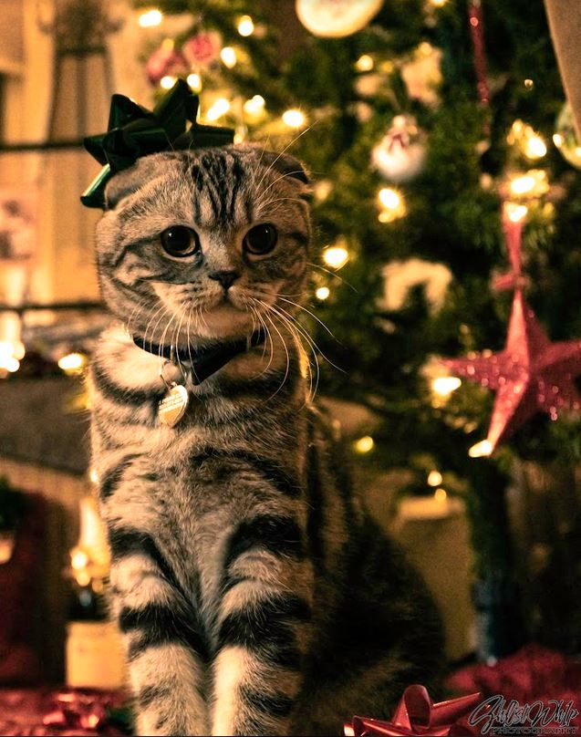

♪♫"These Are A Few Of My Favorite Things!"♫♪
Photography!
Below you can see my favorite subjects to photograph:
- Landscape Photography:
- Mountains
- Rivers
- Coastal Beaches
- Deep Forests
- Golden Hour (Sunset)
- Macro-Photography:
- Everyday Objects
- Textiles and Fabrics
- Flora
- Insects
- Aerial/Drone Photography:
- Cityscape
- Natural Enviroments
- Top-down Shots
- Wide-angle Shots
- Panoramics
Quick kitty break! Want to see my kitty?

"Dang. That is a nice kitty!"
- Everyone
Cooking Food!
My favorite foods to cook are:
- Southern Cooking
- American Grilled
- Comfort Food
- Italian Food
- Mexican Food
Video Games!
These are my favorite genres, starting with my most played:
- Single-Player Narrative
- RPG (Role Playing Games)
- Open World
- Simulation
Music!
I love listening to these groups and their respective genres:
- Metal
- The Contortionist
- Thy Art Is Murder
- Electronic
- Above & Beyond
- AjunaDeep
- DJ Tiesto
- Nox Vahn
Check back in soon, there is more to come!
Click here to learn more about how I created this website.